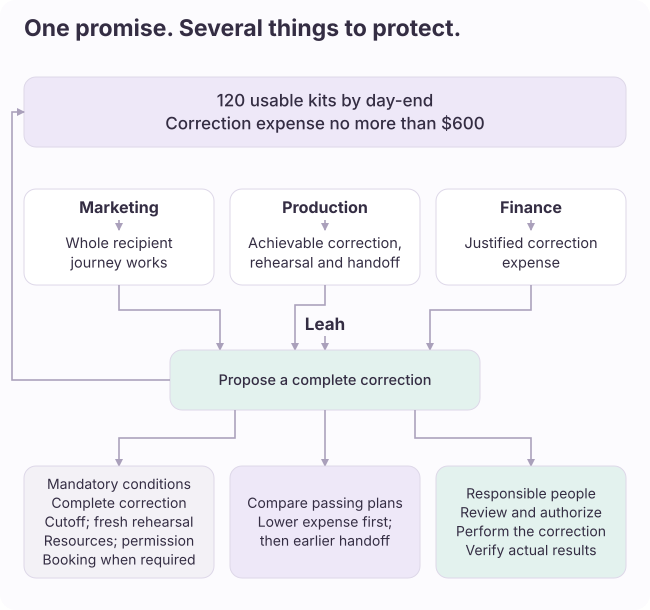
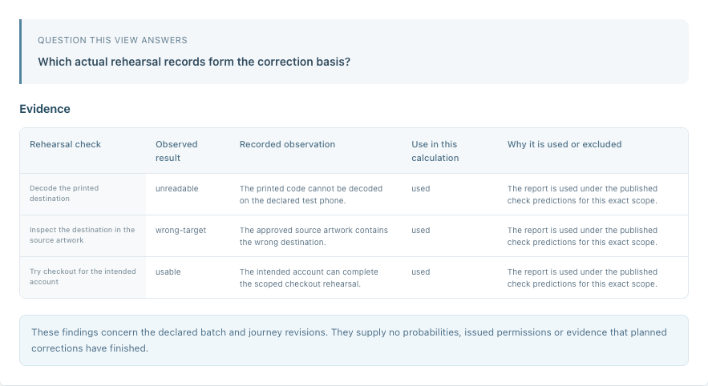
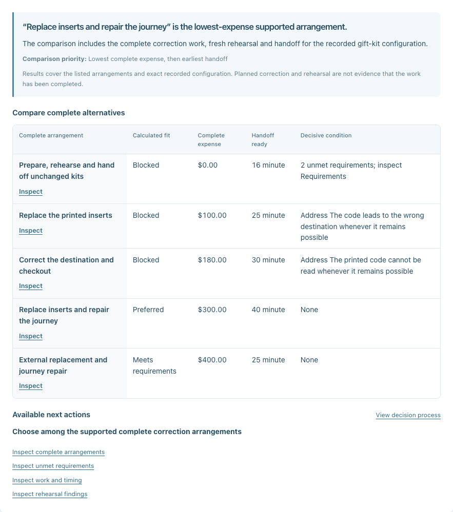
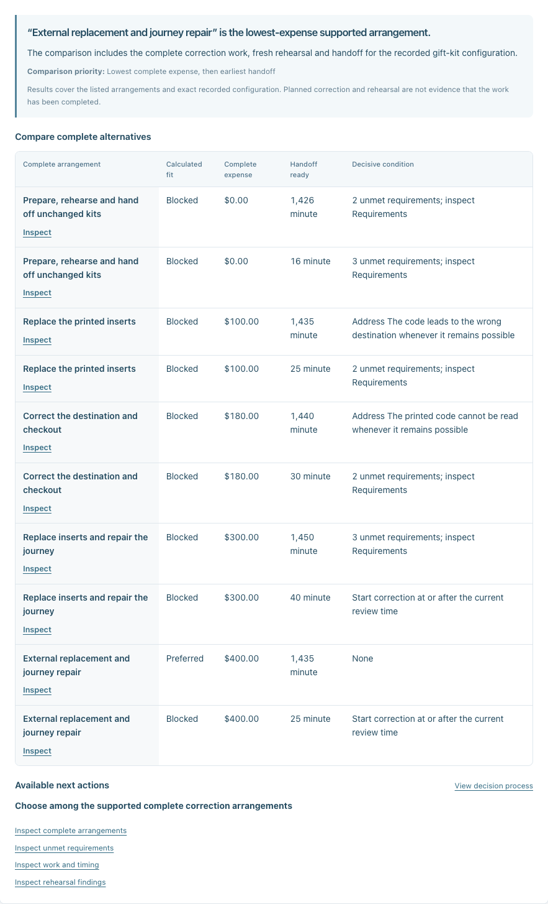
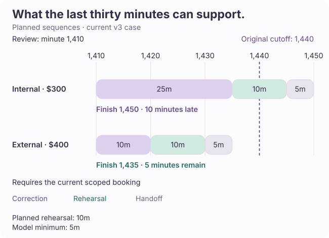
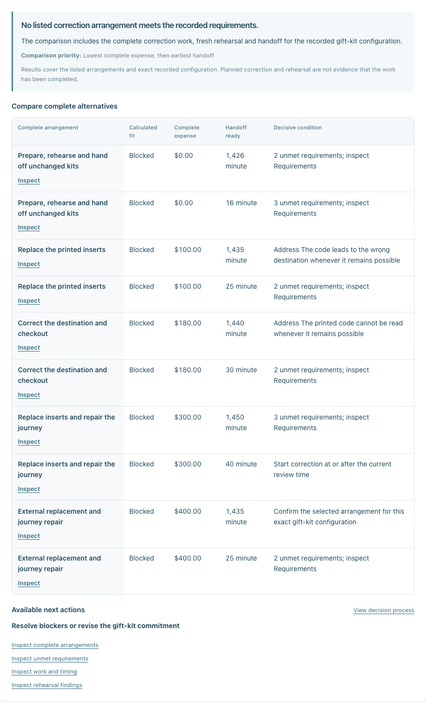
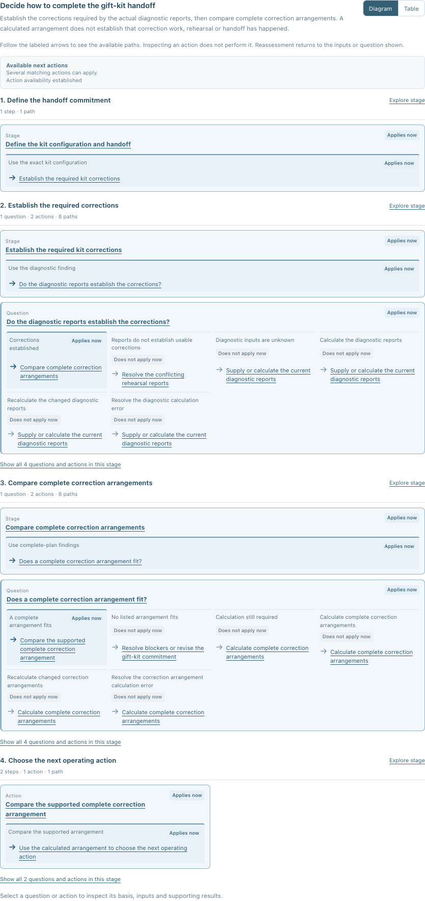
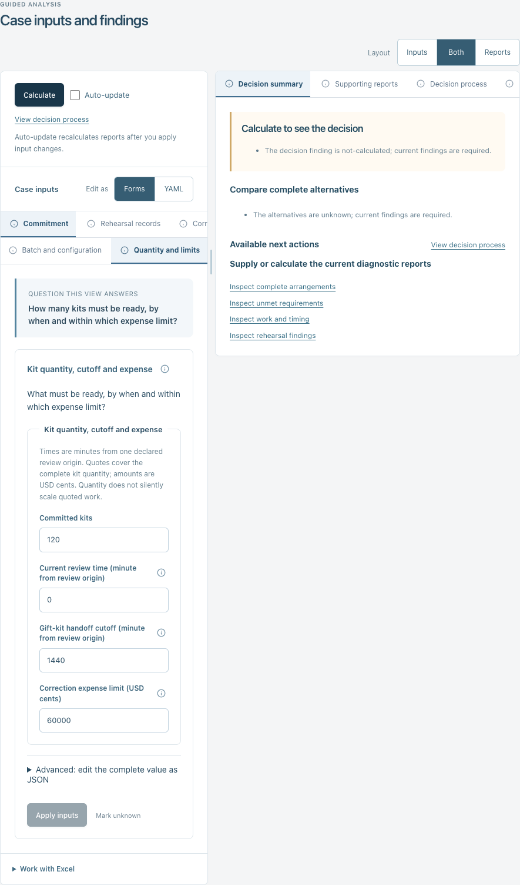
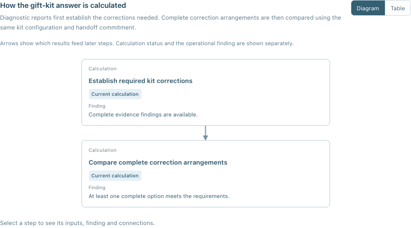
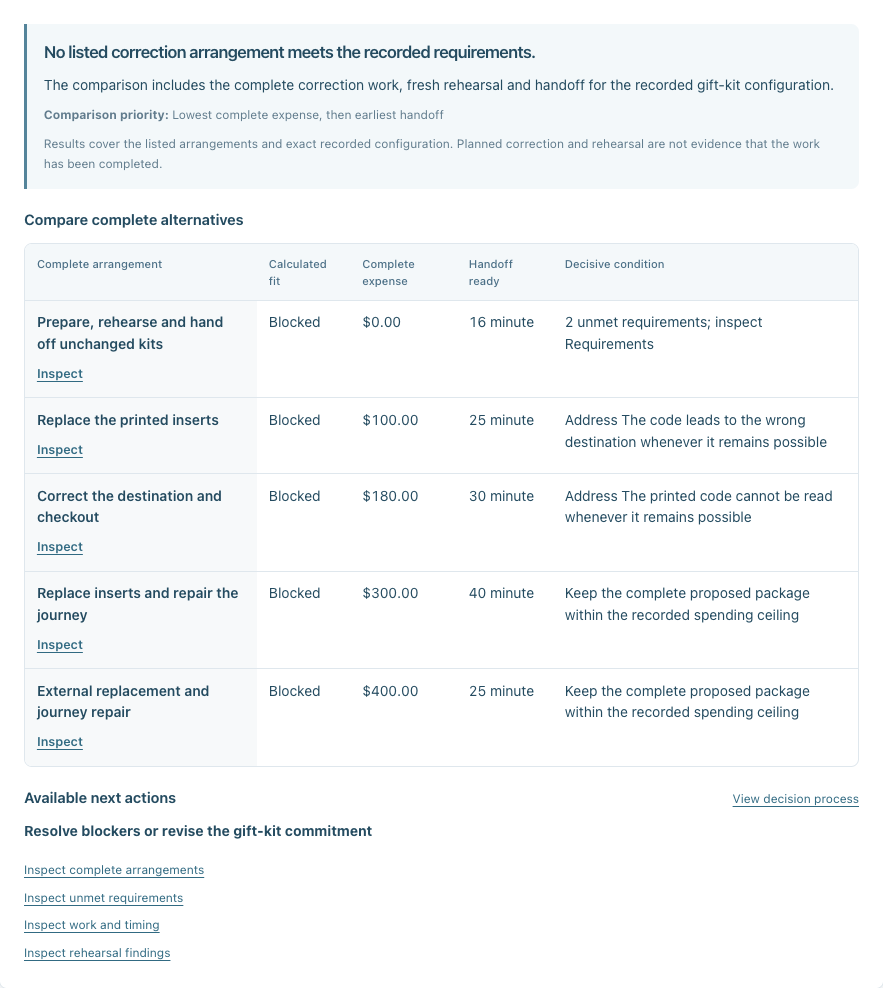

Leah has promised 120 usable gift kits by the end of a one-day preparation window. A failed scan and a wrong destination put that promise at risk. Marketing needs the recipient journey to work, production needs a complete correction it can carry out, and finance expects Leah to justify the expense within $600.
She could gather the records and compare quotes in a meeting or spreadsheet. Either approach must answer the same questions: what needs correcting, which complete response still fits, and what must the team verify after the work? A $100 reprint leaves one established fault unresolved. A $400 external package needs a reason for its premium and a genuine booking.
Leah uses the configured review to keep those questions connected. First it assesses what the supplied observations establish. Then it checks complete correction arrangements against those findings, the deadline, resources, records and spending boundary. The team can see why a recommendation follows before deciding to act.
Leah and the campaigns are fictional. The screenshots and paired comparisons use the same current Marketplace workflow and supplied one-day case. It plans ten minutes of rehearsal under a five-minute minimum. The exact definition, inputs and native exports are identified in Sources and scope.


What do the records establish?
The recipient journey runs from decoding the printed code, through the intended destination, to completing checkout. Three supplied records examine different parts of that journey. They describe the same batch, insert and digital revisions, test phone and recipient account. A result for another configuration would need its own assessment.
| Check | Recorded result | What it tells Leah |
|---|---|---|
| Decode the printed code | Unreadable | The printed code cannot be decoded on the declared test phone. |
| Inspect the source artwork | Wrong destination | The approved source artwork contains the wrong destination. |
| Rehearse checkout | Usable | The intended account can complete the scoped checkout rehearsal. |
The evidence assessment examines the fault combinations compatible with those records. Its completed finding establishes both the printed-code and wrong-destination faults under the model. The successful checkout record leaves those faults in place. Leah therefore needs a correction that addresses both.


This finding concerns the supplied observations and configuration. People still establish the records’ authenticity and scope. A successful earlier checkout also leaves a fresh rehearsal of the corrected kits outstanding.
Which complete correction can meet the promise?
An arrangement combines a correction package with the people, resources, timing and permissions it requires under the rules and current context. The Arrangement Problem is whether those choices fit together. Each supplied quote covers 120 kits; planning must also include fresh rehearsal and handoff.
| Supplied correction | Expense | What planning finds |
|---|---|---|
| Keep the kits unchanged | $0 | Both faults remain. |
| Replace the printed inserts | $100 | The wrong destination remains. |
| Repair the digital journey | $180 | The unreadable printed code remains. |
| Internal replacement and journey repair | $300 | Addresses both faults; the planned complete sequence takes 40 minutes. |
| External replacement and journey repair | $400 | Addresses both faults; the planned complete sequence takes 25 minutes and needs a current booking. |
The commitment assessment checks each supplied complete arrangement against the recorded requirements. With a full day and a current external booking, both complete corrections pass. The agreed priority then prefers lower expense, with earlier handoff used to break a tie: Leah can put forward the $300 internal correction.
A priority chooses among corrections that pass; it cannot make an incomplete or late correction eligible. The case plans ten rehearsal minutes while the authored minimum is five. Planning ten minutes supplies the actual schedule; making ten mandatory would change the requirement applied to every candidate.

Leah reads the supported correction, its complete expense and the conditions that could change it before inspecting the detailed evidence and schedule. See how the same decision-view structure works across domains and identify what a comparable view would need to establish in your own case.
Hermod Labs authored the evidence and planning apps and the workflow connecting them. The first finding supplies the faults the second assessment must address. This is how assessment patterns compose around one business decision: evidence establishes the supported problem; planning establishes which complete response meets the modeled conditions. The review examines the five supplied packages; another quote needs to be added and assessed.
When does the extra $100 protect the deadline?
Shared basis. The same GIFT-120 case and Marketplace 2.3.0 workflow: 120 kits by minute 1,440, a $600 boundary, the same observations, package quotes, resources, permissions and current insert-3 booking. Ten minutes of fresh rehearsal are planned under the five-minute minimum.
What changes. Only the supplied current review time changes, from minute 0 to 1,410. Candidate starts follow that clock; no permission or booking is renewed.
A full day remains
$300 internal correction is preferred.
- Review time
- Minute 0 of 1,440
- Complete handoff
- Internal: minute 40; external: minute 25
- Current booking
- Covers this batch and insert-3


Both complete packages fit. Leah can put forward the cheaper response without paying a deadline premium.
Thirty minutes remain
$400 external correction is preferred.
- Review time
- Minute 1,410 of 1,440
- Complete handoff
- Internal: 1,450; external: 1,435
- Current booking
- The same recorded insert-3 booking


Internal work now misses the original cutoff. The confirmed external package protects five minutes of remaining slack.
What this means for the decision. The priority stays cost first. Changing the available time changes which complete correction meets the promise and whether the extra $100 is justified.


With ample time, Leah can defend the $300 internal correction because it meets the requirements at lower expense. With thirty minutes left, that same 40-minute sequence finishes ten minutes late. Confirmed external work finishes five minutes before the cutoff. The cost-first policy now supports the extra $100 because it preserves a complete response to the original promise.
The urgent comparison also retains earlier candidate starts. A package starting before the current review time is blocked, even if its displayed handoff would be early enough. The package and its start together form the complete arrangement being assessed.
What stays fixed in this comparison?
This comparison changes one input: current review time, from minute 0 to 1,410. Candidate starts follow that clock. The same batch, scoped observations, current booking, minute-1,440 cutoff, $600 limit, package prices, people, resources and validity intervals stay fixed. Both calculations use the same cost-first workflow and ten planned rehearsal minutes. The native comparison record lists the exact difference. Advancing the clock never renews a permission or confirmation.
What if the faster package is not supported?
Shared basis. The same urgent GIFT-120 case, review at minute 1,410, deadline 1,440, $600 boundary, quotes, observations, permissions and availability under the same Marketplace 2.3.0 definition.
What changes. Only the external booking’s insert revision changes: insert-3 versus insert-2. The campaign itself remains on insert-3.
Booking covers the current insert
$400 external correction is supported.
- Campaign insert
- insert-3
- Booking names
- insert-3
- Complete handoff
- Minute 1,435: five minutes before cutoff
The recorded booking supports this proposal. Responsible owners still authorize, perform and verify the work.
Booking covers the previous insert
No supplied complete correction passes.
- Campaign insert
- insert-3
- Booking names
- insert-2
- Internal alternative
- Finishes at 1,450: ten minutes late


Leah has a specific unsupported condition to resolve, rather than treating the fast quote as proof that the package can run.
What this means for the decision. Correct scope matters as much as quoted speed. Obtain a real current booking or another supported response; rewriting an old record would manufacture evidence.
Here the urgent campaign stays fixed and only the insert revision named by the booking changes. The old-insert booking supplies no confirmation for this campaign’s insert. The faster package fails that requirement while internal work still misses the deadline. Leah has no supported complete arrangement among the supplied options.
Her next action is to obtain a genuine current booking, seek another complete response or escalate the promise. Editing the old record to name the new insert would manufacture support. The planning finding gives production and finance a specific condition to resolve.
A shared reference: evidence, plan, actual handoff.
- Leah and the campaign teamEstablish the problem.Assess what the scoped observations support and carry the fault finding into planning.
- Production and financeCompare complete corrections.Check the full sequence and supporting records, then apply the agreed priority to arrangements that pass.
- Responsible ownersCorrect, rehearse and hand off.Authorize and perform the work, obtain a fresh result for the corrected journey and hand over the kits.
Follow the decision process in the app
Decision process connects the business questions to their available responses: resolve the diagnostic records, compare complete corrections, address an unmet condition or put forward a supported package. Its current-case overlay shows which findings support a branch. The same map keeps the alternatives visible so Leah can see what would change the next action.


Opening a branch or switching Diagram/Table is inspection. It neither performs a correction nor records a successful fresh rehearsal or handoff.
Inspect the connected assessments in Decision Lab.
In Decision Lab, open Marketplace → Gifting operations, install or update the collection and choose Start analysis for Plan a gift-kit commitment · 2.3.0. The current workflow uses Calculate / Recalculate and a focused Decision summary. It calculates the evidence and dependent planning findings in order.
The screenshots below use this article’s supplied fictional one-day case. Its $600 boundary, 120-kit quantity, minute-1,440 deadline and ten planned rehearsal minutes reproduce the ample-time findings. The side-by-side comparisons above use this same definition; their changed inputs are retained in the capture record.
Open the supplied inputs and inspect each calculation
- Load the full case. In Inputs → YAML, paste the supplied case and choose Preview changes → Apply case changes. Its own resource, permission and booking intervals remain part of the input.
- Check the facts. Inputs → Forms groups Commitment, Rehearsal records and Correction arrangements. Choose Apply inputs after editing a form.
- Calculate. Choose Calculate at the top of Inputs. A missing or incomplete evidence result cannot supply a usable downstream fault finding.
- Inspect the answer. Decision summary leads with the $300 internal complete correction, handoff at minute 40, and a compact comparison showing why the partial fixes fail. Choose Inspect on an arrangement to open its exact supporting report. Supporting reports also exposes Evidence, Requirements and Work and timing without changing the input tab.


Switching Forms/YAML preserves drafts; input and report tabs remain independent. Work with Excel keeps workbook tools in a disclosure. The optional Auto-update recalculates after applied changes; Leah can leave it off and choose when to recalculate. Inspecting an arrangement changes the view; it does not select or authorize that work.
See how the assessments connect
Calculation dependencies shows the evidence assessment feeding the planning assessment. It explains how the answer is calculated; Decision process explains which business responses follow from the findings. Opening either view runs no calculation.


Separate calculation: what if only $200 is available?
A changed boundary needs a new finding.
Now finance reduces the available correction expense to $200. Keep the observations, quotes, timing, permissions and booking fixed. Leah edits Correction expense limit (USD cents) from 60,000 to 20,000 and chooses Apply inputs. The earlier planning result becomes stale; the comparison marks its alternatives stale and withdraws the current correction proposal until she chooses Recalculate. The unchanged evidence result stays current.
Shared basis. The same full-day GIFT-120 case and Marketplace 2.3.0 definition, with all quotes, observations, resources, permissions, current booking and ten planned rehearsal minutes unchanged.
What changes. Only the expense boundary changes from $600 to $200. Planning becomes stale after Apply inputs and is reassessed by Recalculate.
$600 available
$300 internal correction is preferred.
- Complete packages
- $300 internal; $400 external
- Complete handoff
- Internal at 40; external at 25
The cheaper complete package meets the promise, and the external package remains an alternative.
$200 available
No supplied complete correction passes.
- Partial packages
- $100 or $180, each leaving a fault
- Complete packages
- Both exceed the new boundary


A finished calculation has established an operating blocker. Leah needs a changed authorization, a different complete quote or escalation.
What this means for the decision. A completed calculation can establish that none of the supplied responses fits. It does not waive the recorded spending requirement.
This is a useful answer even though it offers no correction to approve. The cheaper packages still leave an established fault unresolved; the complete packages exceed the new boundary. Leah needs a different supported quote, a changed spending authorization or an escalation. A completed calculation does not mean a feasible plan exists, and neither result authorizes work or establishes that a fresh rehearsal has passed.
These captures use the current local production preview. The calculation capture record retains the exact workflow, supplied inputs, native exports and runtime identity. The CLI and SDK stories also calculate connected assessments, using their own operating configuration and actual-event records.
Leah can justify a response and its remaining work.
With ample time, Leah puts forward the $300 in-house complete correction. With thirty minutes left and a current booking, she puts forward the $400 external correction, finishing at minute 1,435. With the old-insert booking, she escalates the unsupported condition instead of presenting a quote as a workable plan.
Finance can see the deadline-based reason for the premium. Production can inspect the complete work and supporting records. Marketing can see how it protects the recipient journey. Responsible owners still choose and authorize the work, perform the correction, obtain a fresh rehearsal result and hand over the kits. A failed actual rehearsal reopens the question.
The CLI story repeats the connected assessments across campaigns; the SDK story continues one urgent case through correction and actual operating records. Those clients use the calculation lifecycle with their own operating models and actual-event records.